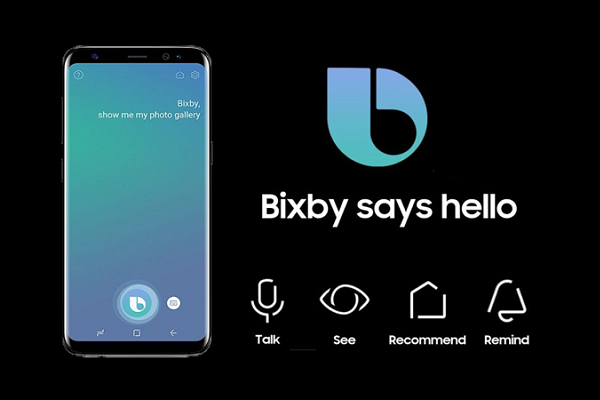

AI in MobilesHow Do Smartphones Use AI?Unlike the first mobile phones—which could do little more than make calls, save contacts, and take low-res photos—a smartphone is a pocket-sized computer with a full-fledged operating system, a QWERTY keyboard, web access, apps, messaging, and more. Smartphones offer many of the features a standard computer has, and it makes calls. AI is behind much of this evolution. The areas in which AI has made its mark in mobile technology are too many to list; here, we focus on voice assistant functions, photography, and facial recognition. Voice AssistantsVoice assistants such as Google Assistant, Siri, and Samsung Bixby use data to understand users' voice commands and perform a variety of tasks.
Bixby, featured in some Samsung devices, uses Bixby Vision to help you learn more about the objects and landmarks around you. A Bixby Vision user can point their phone at a landmark or product to get more information about it immediately. cortana is Microsoft's digital assistant, but the company has mostly dropped its support, including removing its apps from both the App Store and Google Play and diminishing its presence in Windows 11 . Google Assistant performs tasks and personalizes its responses based on your previous commands and other data, such as previous Google searches. Google Assistant takes advantage of an AI-driven technology called Google Duplex, which allows Google Assistant to make reservations and appointments using voice emulation. Working with select restaurant partners, it can autofill your personal and payment details. siri is Apple's virtual assistant, and it's built into everything the company makes. You'll find Siri in the iPhone, iPad, Mac, Apple TV, and even the HomePod smart speaker. You can use Siri for voice searches, song identification, and controlling your devices. Photography and VideographyAI allows smartphone users to take better selfies, portraits, videos, and low-light photos than ever before. It's responsible for the ability to add special effects, too. One example is the Google Pixel's Super Res Zoom. It uses an algorithm, rather than the lens, to zoom in on a subject. An AI algorithm produces detailed "up close" photos without the user having to crop them. Facial RecognitionFacial recognition software such as iPhone's Face ID enables users to unlock their phones using their faces. AI and ML algorithms enable the smartphone's camera to recognize its user and grant access. This convenient feature is an increasingly common approach to security in smartphones of all platforms and in the apps that run on them. |